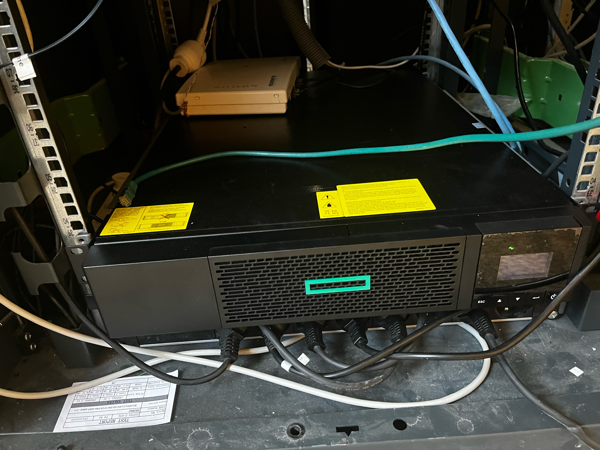

Afin de renforcer la sécurité de la salle des serveurs et garantir une continuité opérationnelle sans faille, j'ai récemment supervisé et implémenté avec succès l'installation d'un onduleur de haute qualité. Cette solution stratégique assure une alimentation électrique ininterrompue en cas de coupure, jouant ainsi un rôle crucial dans la préservation des opérations critiques de notre infrastructure informatique.
La réalisation de cette mission a nécessité une planification méticuleuse, débutant par une évaluation exhaustive des besoins en alimentation électrique de la salle des serveurs. Une analyse approfondie des équipements et des exigences de charge a été effectuée pour garantir que l'onduleur sélectionné était dimensionné de manière adéquate, offrant une autonomie suffisante pour faire face aux interruptions de courant.
Le processus d'installation a été exécuté avec précision, en veillant à ce que chaque composant soit positionné de manière optimale pour assurer une dissipation de chaleur efficace et un accès facile pour la maintenance. Des procédures de test rigoureuses ont été mises en place pour vérifier la fonctionnalité de l'onduleur dans des conditions simulées de coupure de courant, garantissant ainsi sa fiabilité lors d'une situation réelle.
Avant la mise en service de l'onduleur, une sauvegarde exhaustive des données critiques a été effectuée, assurant la préservation de l'intégrité des informations stockées dans la salle des serveurs. Cette étape préalable à l'installation visait à minimiser tout risque de perte de données et à garantir un processus d'installation sans accroc, préservant la continuité de nos activités informatiques.
En conclusion, l'installation de cet onduleur représente une étape cruciale dans notre engagement envers la sécurité et la stabilité de notre infrastructure informatique. Cette solution assure non seulement la protection des opérations critiques mais renforce également notre capacité à réagir de manière proactive aux défis potentiels, assurant ainsi la disponibilité constante de nos services informatiques essentiels.
